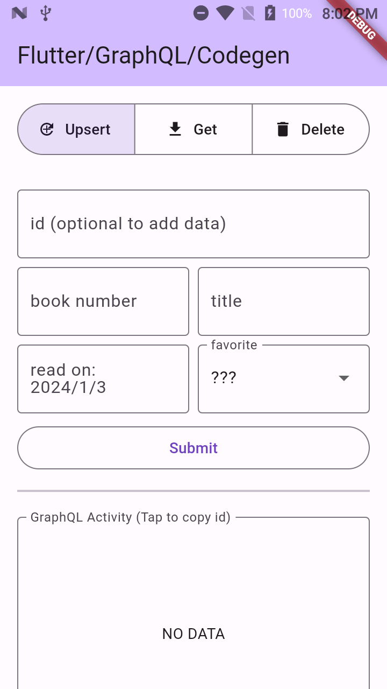
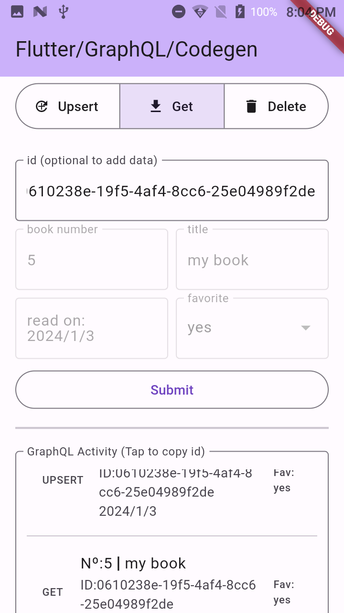

To be able to use the GraphQL code generator, you'll have to make use of introspection. Introspection allows you to ask your GraphQL server about the types it supports and provides detailed information about it. You will make use of it in order to get Dgraph complete generated schema. In order to do so, you'll need the help of the Get GraphQL Schema library.
The library is available in node package manager (npm). So first, install nodejs. Open a Terminal, then run sudo npm install -g get-graphql-schema to install it.
Start up a Dgraph local server on a new Terminal with sudo docker run -it -p 8080:8080 dgraph/standalone:latest.
Create an empty flutter project and name it flutter_codegen_graphql of whatever name of your choosing. Prepare a Dgraph schema and name it schema.dgraph.graphql. This will be its content:
type MyBook {
id:String! @id
bookNumber:Int!
title:String!
readOn:DateTime!
favorite:Boolean
}
Here I want to point out that you define your own id. So the type here is not ID! but a String! with an @id directive. It also means that Dgraph won't be generating any ids for you. You'll have to provide your own. This setup will allow you to use Dgraph upsert feature.
Next, push the schema.dgraph.graphql file to the Dgraph server: curl -X POST localhost:8080/admin/schema --data-binary '@schema.dgraph.graphql'
Once you upload your Dgraph schema to the server, get the generated schema by running this command: get-graphql-schema http://localhost:8080/graphql > schema.graphql
The output file will be schema.graphql. It will appear depending on which path you were when opening your Terminal. Add this file under your lib project folder. You will need this file later for the flutter sample app.
The sample app you'll build will allow to communicate with the server by adding or updating data, getting information from the data you've entered, and deleting it. You will use Dgraph upsert. Meaning that if the id you entered doesn't match with the database then it will do an add operation. However, if the id does match then it will update the existing data instead. You'll also make use of a UUID package to generate your own ids. A GraphQL activity log will be available to see the queries you perform. You can also tap the log list item to copy it's id to reuse for other queries.
 |  | |
This will be the content of your lib folder:
📂lib
┣ 📂graphql_queries
┃ ┣ 📜delete_book.mutation.graphql
┃ ┣ 📜delete_book.mutation.graphql.dart
┃ ┣ 📜get_book.query.graphql
┃ ┣ 📜get_book.query.graphql.dart
┃ ┣ 📜upsert_book.mutation.graphql
┃ ┗ 📜upsert_book.mutation.graphql.dart
┣ 📂model
┃ ┣ 📜my_book.dart
┃ ┣ 📜my_book.freezed.dart
┃ ┗ 📜my_book.g.dart
┣ 📂widget
┃ ┗ 📜my_book_page.dart
┣ 📜graphql_client.dart
┣ 📜graphql_client.g.dart
┣ 📜main.dart
┣ 📜schema.graphql
┗ 📜schema.graphql.dart
The're also the schema.dgraph.graphql file that will be on your root of your project if you ever need to regenerate with introspection.
To prepare yourself to generating code you'll need to install the graphql_codegen along with build_runner packages. Run the following command to install flutter pub add --dev graphql_codegen build_runner.
To be able to use the generated helper methods on the GraphQL client you'll also need to install graphql. Run the following command to install flutter pub add graphql.
You'll need to create a configuration file to tell the graphql_codgen to recognize GraphQL scalar types to be remapped as Dart types. To learn about Dgraph supported types you can head over to Dgraph's Scalars types.
You only need to define two scalar types DateTime and Int64. The reason for the Int64 is that GraphQL Int scalar type is 32bit while Dart int is 64bit by Default. So we need to match it's interger range. As for DateTime it's uses the same rules. However, other GraphQL backend could defined it differently, that why you must specify it.
You'll also need to define the graphql package to generate helper method for your queries. On the root of your Flutter project, create a build.yaml file and add the following:
build.yaml:targets:
$default:
builders:
graphql_codegen:
options:
# add unsupported scalar type to dart type
scalars:
DateTime:
type: DateTime
Int64:
type: int
# add graphql client to generate helper methods
clients:
- graphql
Generated code often have analyzer warning from your IDE. To excludes those files add the following at the end of your analysis_options.yaml file:
analysis_options.yaml:analyzer:
exclude:
- "**/*.graphql.dart"
Your queries will be the following:
delete_book.mutation.graphql:mutation deleteMyBook($deleteBook: MyBookFilter!){
deleteMyBook(filter: $deleteBook){
msg
myBook{
id
bookNumber
title
readOn
favorite
}
}
}
get_book.query.graphql:query getMyBook($getBook: String!){
getMyBook(id: $getBook){
id
bookNumber
title
readOn
favorite
}
}
To activate upsert you need to set the flag to true.
upsert_book.mutation.graphql:mutation upsertMyBook($upsertBook: [AddMyBookInput!]!){
addMyBook(input: $upsertBook, upsert: true){
myBook{
id
bookNumber
title
readOn
favorite
}
}
}
To generate your dart files, you'll have to make sure that your generated schema.graphql from earlier introspection is in the project. Then, you can run the command dart run build_runner build -d or dart run build_runner build watch -d. You will see the dart file generated for you.
The model for the app is using riverpod and freezed be sure to add the dependencies. As you may notice, using the generated files you access the extension methods build in to the GraphQL client. You don't need to type any json by hand which make it less error prone. You only choose the input provided and it also follows the same pattern as your GraphQL queries methods which helps with readability. You also get a variable property called result.parsedData which is very useful when handling results. You'll see that you've used the UUID method to generate a new id when doing an upsert or provide your own.
my_book.dart:import 'package:flutter/foundation.dart';
import 'package:freezed_annotation/freezed_annotation.dart';
// hide the JsonSerializable as there is a library conflict with json_annotation
import 'package:graphql/client.dart' hide JsonSerializable;
import 'package:riverpod_annotation/riverpod_annotation.dart';
import 'package:uuid/data.dart';
import 'package:uuid/rng.dart';
import 'package:uuid/uuid.dart';
import '../graphql_queries/upsert_book.mutation.graphql.dart';
import '../graphql_queries/get_book.query.graphql.dart';
import '../graphql_queries/delete_book.mutation.graphql.dart';
import '../schema.graphql.dart';
part 'my_book.freezed.dart';
part 'my_book.g.dart';
@freezed
class MyBook with _$MyBook {
const factory MyBook({
required String id,
required int bookNumber,
required String title,
required DateTime readOn,
required bool? favorite,
}) = _MyBook;
factory MyBook.fromJson(Map<String, Object?> json) => _$MyBookFromJson(json);
}
@riverpod
class MyBookQueries extends _$MyBookQueries {
final Uuid uuid = Uuid(goptions: GlobalOptions(CryptoRNG()));
final List<MyBook> myBookListActivity = [];
final List<String> graphQLActivityListType = [];
@override
MyBook build(GraphQLClient client) {
debugPrint('${uuid.goptions!.rng}');
return MyBook(
id: '',
bookNumber: 0,
title: '',
readOn: DateTime.now(),
favorite: null,
);
}
Future<void> upsertBook({
String? id,
required int bookNumber,
required String title,
required DateTime readOn,
bool? favorite,
}) async {
final result = await client.mutate$upsertMyBook(
Options$Mutation$upsertMyBook(
fetchPolicy: FetchPolicy.noCache,
variables: Variables$Mutation$upsertMyBook(
upsertBook: [
Input$AddMyBookInput(
// if no id is given or doesn't match
// in the database then we want to
// add a book otherwise we update
id: id ?? uuid.v4(),
bookNumber: bookNumber,
title: title,
readOn: readOn,
favorite: favorite,
)
],
),
),
);
final parsedData = result.parsedData;
final myBook =
parsedData?.addMyBook?.myBook?[0]?.toJson() as Map<String, Object?>;
final MyBook book = MyBook.fromJson(myBook);
myBookListActivity.add(book);
graphQLActivityListType.add('UPSERT');
state = book;
debugPrint('Upsert: ${result.data}');
}
Future<void> getBook({required String id}) async {
final result = await client.query$getMyBook(
Options$Query$getMyBook(
fetchPolicy: FetchPolicy.noCache,
variables: Variables$Query$getMyBook(getBook: id),
),
);
final parsedData = result.parsedData;
final myBook = parsedData?.getMyBook?.toJson() as Map<String, Object?>;
final MyBook book = MyBook.fromJson(myBook);
myBookListActivity.add(book);
graphQLActivityListType.add('GET');
state = book;
debugPrint('Get: ${result.data}');
}
Future<void> deleteBook({required String id}) async {
final result = await client.mutate$deleteMyBook(
Options$Mutation$deleteMyBook(
fetchPolicy: FetchPolicy.noCache,
variables: Variables$Mutation$deleteMyBook(
deleteBook: Input$MyBookFilter(id: Input$StringHashFilter(eq: id)),
),
),
);
final parsedData = result.parsedData;
final myBook =
parsedData?.deleteMyBook?.myBook?[0]?.toJson() as Map<String, Object?>;
final MyBook book = MyBook.fromJson(myBook);
myBookListActivity.add(book);
graphQLActivityListType.add('DELETE');
state = book;
debugPrint('Delete: ${result.data}');
}
}
graphql_client.dart:import 'package:graphql/client.dart';
import 'package:riverpod_annotation/riverpod_annotation.dart';
part 'graphql_client.g.dart';
GraphQLClient graphQLClientInit() {
final httpLink = HttpLink(
'http://localhost:8080/graphql',
);
final authLink = AuthLink(
getToken: () async => '', //'Bearer $YOUR_PERSONAL_ACCESS_TOKEN',
);
Link link = authLink.concat(httpLink);
return GraphQLClient(
cache: GraphQLCache(),
link: link,
);
}
@riverpod
GraphQLClient graphQLClient(GraphQLClientRef ref) {
return graphQLClientInit();
}
This is the code for the widget. It's uses a Segmented button to change between state along with a Form that contains TextFields, a DatePicker and a DropDownButton. Depending on the category, it will disable the uneccesary fields for the query. There is a ListView with ListTiles to output the result of each request from the queries.
my_book_page.dart:import 'package:flutter/material.dart';
import 'package:flutter/services.dart';
import 'package:flutter_riverpod/flutter_riverpod.dart';
import 'package:graphql_codegen_flutter/graphql_client.dart';
import 'package:graphql_codegen_flutter/model/my_book.dart';
enum Queries { upsertBook, deleteBook, getBook }
class MyBookPage extends StatefulWidget {
const MyBookPage({super.key});
@override
State<MyBookPage> createState() => _MyBookPageState();
}
class _MyBookPageState extends State<MyBookPage> {
Queries queriesView = Queries.upsertBook;
@override
Widget build(BuildContext context) {
return Scaffold(
appBar: AppBar(
title: const Text('Flutter/GraphQL/Codegen'),
backgroundColor: Theme.of(context).colorScheme.inversePrimary,
),
body: SafeArea(
child: SingleChildScrollView(
child: Column(
crossAxisAlignment: CrossAxisAlignment.stretch,
children: [
Padding(
padding: const EdgeInsets.all(16.0),
child: SegmentedButton<Queries>(
showSelectedIcon: false,
segments: const <ButtonSegment<Queries>>[
ButtonSegment<Queries>(
value: Queries.upsertBook,
label: Text('Upsert'),
icon: UpsertIcon()),
ButtonSegment<Queries>(
value: Queries.getBook,
label: Text('Get'),
icon: Icon(Icons.download)),
ButtonSegment<Queries>(
value: Queries.deleteBook,
label: Text('Delete'),
icon: Icon(Icons.delete)),
],
selected: <Queries>{queriesView},
onSelectionChanged: (Set<Queries> newSelection) {
setState(() {
// By default there is only a single segment that can be
// selected at one time, so its value is always the first
// item in the selected set.
queriesView = newSelection.first;
});
},
),
),
MyBookFormField(querySelected: queriesView)
],
),
),
),
);
}
}
class MyBookFormField extends ConsumerStatefulWidget {
final Queries querySelected;
const MyBookFormField({
required this.querySelected,
super.key,
});
@override
ConsumerState<MyBookFormField> createState() => _MyBookFormFieldState();
}
class _MyBookFormFieldState extends ConsumerState<MyBookFormField> {
final idField = 'id (optional to add data)';
final activityField = 'GraphQL Activity (Tap to copy id)';
late bool enabled;
InputDecoration _decoration(String value) {
// check which category where in and disable fields
enabled = (idField == value || activityField == value)
? true
: widget.querySelected == Queries.upsertBook;
return InputDecoration(
border: const OutlineInputBorder(),
label: Text(value),
hintText: value,
enabled: enabled,
);
}
// variables for date picker field
late DateTime? currentDate;
late String _selectedDate = _dateFormat(DateTime.now());
String _dateFormat(DateTime? date) {
currentDate = date;
return date == null
? _selectedDate
: '${date.year}/${date.month}/${date.day}';
}
// variables for dropdown favorite field
final List<String> _favoriteValues = ['yes', 'no', '???'];
late String _selectedFavorite = _favoriteValues.last;
bool? _favoriteCase(String testCase) {
switch (testCase) {
case 'yes':
return true;
case 'no':
return false;
default:
return null;
}
}
String? _favoriteFormat(bool? value) {
switch (value) {
case true:
return 'yes';
case false:
return 'no';
default:
return '???';
}
}
// variables for the id/bookNumber/title fields
final TextEditingController _textEditId = TextEditingController();
final TextEditingController _textEditBookNumber = TextEditingController();
final TextEditingController _textEditTitle = TextEditingController();
// riverpod variables for queries, activity list and requestTypeList
late final _graphQLClient = ref.watch(graphQLClientProvider);
late final _myBookQueries =
ref.watch(MyBookQueriesProvider(_graphQLClient).notifier);
late List<MyBook> _myBookList = _myBookQueries.myBookListActivity;
late final List<String> _requestTypeList =
_myBookQueries.graphQLActivityListType;
void _updateList() =>
setState(() => _myBookList = _myBookQueries.myBookListActivity);
// empty field checker for title/bookNumber
String? _emptyFieldValidator(String? value) {
if (value!.isEmpty) {
return 'Please enter a value';
}
return null;
}
final _formKey = GlobalKey<FormState>();
@override
Widget build(BuildContext context) {
return Padding(
padding: const EdgeInsets.all(16.0),
child: Form(
key: _formKey,
child: Column(
crossAxisAlignment: CrossAxisAlignment.stretch,
children: [
Row(
children: [
Expanded(
child: TextFormField(
decoration: _decoration('id (optional to add data)'),
controller: _textEditId,
validator: (value) =>
(widget.querySelected != Queries.upsertBook &&
value!.isEmpty)
? 'Please enter an id for \'Get\' or \'Delete\''
: null,
),
),
],
),
const SizedBox(height: 8),
Row(
children: [
Expanded(
child: TextFormField(
decoration: _decoration('book number'),
keyboardType: TextInputType.number,
controller: _textEditBookNumber,
validator: enabled ? _emptyFieldValidator : null,
),
),
const SizedBox(width: 8),
Expanded(
child: TextFormField(
decoration: _decoration('title'),
controller: _textEditTitle,
validator: enabled ? _emptyFieldValidator : null,
),
),
],
),
const SizedBox(height: 8),
Row(
children: [
Expanded(
child: TextFormField(
decoration: _decoration('read on:\n$_selectedDate'),
canRequestFocus: false,
onTap: () async {
DateTime? selectedDate = await showDatePicker(
context: context,
firstDate:
DateTime.now().subtract(const Duration(days: 365)),
lastDate: DateTime.now().add(const Duration(days: 365)),
);
setState(() => _selectedDate = _dateFormat(selectedDate));
},
),
),
const SizedBox(width: 8),
Expanded(
child: DropdownButtonFormField<String>(
style: Theme.of(context).textTheme.bodyLarge,
decoration: _decoration('favorite'),
value: _selectedFavorite,
items: _favoriteValues.map((String favorite) {
return DropdownMenuItem<String>(
value: favorite,
child: Text(favorite),
);
}).toList(),
onChanged: enabled
? (String? newValue) {
setState(() => _selectedFavorite = newValue!);
}
: null,
),
),
],
),
const SizedBox(height: 8),
OutlinedButton(
onPressed: () async {
FocusScope.of(context).unfocus(); // disable keyboard
if (_formKey.currentState!.validate()) {
switch (widget.querySelected) {
case Queries.upsertBook:
await _myBookQueries.upsertBook(
id: _textEditId.text.isEmpty ? null : _textEditId.text,
bookNumber: int.parse(_textEditBookNumber.text),
title: _textEditTitle.text,
readOn: currentDate!,
favorite: _favoriteCase(_selectedFavorite),
);
_updateList();
break;
case Queries.getBook:
await _myBookQueries.getBook(id: _textEditId.text);
_updateList();
break;
case Queries.deleteBook:
await _myBookQueries.deleteBook(id: _textEditId.text);
_updateList();
break;
}
}
},
child: const Text('Submit'),
),
const SizedBox(height: 8),
const Divider(thickness: 2),
const SizedBox(height: 16),
AspectRatio(
aspectRatio: 3 / 2,
child: InputDecorator(
decoration: _decoration('GraphQL Activity (Tap to copy id)'),
child: _myBookList.isEmpty
? const Center(child: Text('NO DATA'))
: ListView.separated(
separatorBuilder: (context, index) => const Divider(),
itemCount: _myBookList.length,
shrinkWrap: true,
itemBuilder: (BuildContext context, int index) =>
ListTile(
leading: Text(_requestTypeList[index]),
title: Text(
'Nº:${_myBookList[index].bookNumber} ❘ ${_myBookList[index].title}'),
subtitle: Text(
'ID:${_myBookList[index].id}\n${_dateFormat(_myBookList[index].readOn)}',
),
trailing: Text(
'Fav:\n${_favoriteFormat(_myBookList[index].favorite)}'),
onTap: () async {
// copy id
await Clipboard.setData(
ClipboardData(text: _myBookList[index].id),
).then(
(value) => ScaffoldMessenger.of(context)
.showSnackBar(
const SnackBar(
content: Text('copied id to clipboard'),
),
),
);
}),
),
),
),
],
),
),
);
}
}
class UpsertIcon extends StatelessWidget {
const UpsertIcon({super.key});
@override
Widget build(BuildContext context) {
return const Stack(
alignment: Alignment.center,
children: [
Icon(Icons.refresh),
Icon(Icons.add, size: 12),
],
);
}
}
main.dart:import 'package:flutter/material.dart';
import 'package:flutter_riverpod/flutter_riverpod.dart';
import 'package:graphql_codegen_flutter/widget/my_book_page.dart';
void main() {
runApp(const ProviderScope(child: MyApp()));
}
class MyApp extends StatelessWidget {
const MyApp({super.key});
// This widget is the root of your application.
@override
Widget build(BuildContext context) {
return MaterialApp(
title: 'Flutter/GraphQL/Codegen Demo',
theme: ThemeData(
colorScheme: ColorScheme.fromSeed(seedColor: Colors.deepPurple),
useMaterial3: true,
),
home: const MyBookPage(),
);
}
}
Now your ready to run the app.
Connect your android device via usb and connect to Dgraph local server: ./adb reverse tcp:8080 tcp:8080
Run the code and see the result.
If you have trouble running the app, you can compare your code from the github repository.
You can now super speed your development with little errors. You're on your way on becoming a productive developer.
Some references that help me with the contents of this codelab.
This codelab may have some issues and to me this is only a draft, they are improvements that can be done. If you found a problem or have suggestions, you can click the report a mistake on the bottom left of the codelab it will open a github issue.